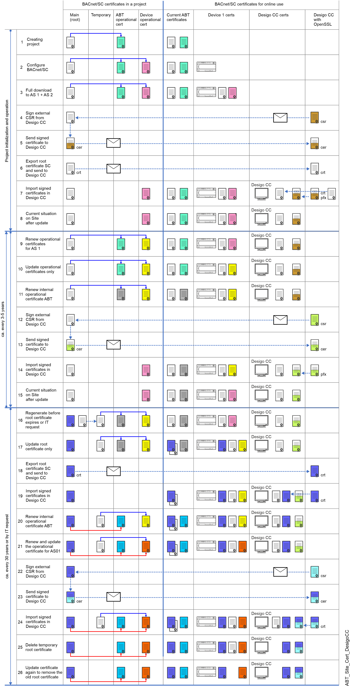

ABT Site as CA with Desigo CC connection
此示例将 ABT 站点显示为 BACnet/SC 网络的 CA（认证机构）。内部证书应用于 Desigo 设备。 Desigo CC 的证书必须由同一个 CA（例如，同一个 ABT 站点项目）根据 Desigo CC 管理站提供的证书签名请求进行签名。当工作流程中发生更改时，证书颜色会显示。

NOTICE

如果参数或程序结构不正确，设备将无法正常工作
这可能导致工厂或项目的重新设计和调试成本高昂
- Obtain the latest control program from the ABT Site project
- Commissioning with the IP configuration is completed.
- Always first upload parameter data or control program on customer site.
- Always perform the first time a full download of the control program with BACnet/SC certificate. Afterwards, use Only updated certificates to update BACnet/SC operational and root certificates.
| Description |
1 | 根证书（白色）和 ABT 站点操作证书（绿色）是在创建 ABT 站点项目时创建的。此根证书在到期日期之前或客户请求续订根证书时一直有效（请参阅步骤 16）。 Notes:
|
2 | 将设备分配到 ABT 站点后，可以创建设备操作证书（粉色）。此时，设备中尚未加载任何证书。 Configuring BACnet/SC具有集线器、故障转移集线器和节点。 Note：每个设备都有自己的基于序列号的操作证书。无法多次使用证书。 |
下载操作证书需要完整下载。下载后，设备可以使用 BACnet/SC. 进行操作 Note：在现有项目中，需要从设备回读当前参数和工程数据。 | |
从 Desigo CC 收到的“证书签名请求”(csr) 由 ABT 站点签署为 CA，以便为 Desigo CC 创建 BACnet 操作证书。 | |
5 | 签名的操作证书作为 cer 文件发送回 Desigo CC 管理站。 |
根证书必须发送到 Desigo CC 管理站。 | |
7 | ABT 站点签名证书和根证书将导入到 Desigo CC 管理站中。此过程超出了 ABT 站点的范围。 |
8 | 显示整个项目使用 BACnet/SC. 运行的状态，随着时间的推移，步骤 9 或 16 可能会变得必要。 |
必须提前计划好设备操作证书（黄色）的定期更新。设备会在证书过期前 90 天发送提醒警报。建议提前一年做好预算。一旦确定证书更新日期，即可在 ABT 站点进行更新。 | |
使用Only updated certificates用于更新设备操作证书。 | |
可以随时更新 ABT 站点操作证书（灰色），独立于 BACnet/SC 网络中的其他设备，因为根证书仍然相同，并且所有设备都信任由该根签名的证书。 | |
从 Desigo CC 收到的“证书签名请求”(csr) 由 ABT 站点签署为 CA，以便为 Desigo CC 创建 BACnet 操作证书。 | |
13 | 签名的操作证书作为 cer 文件发送回 Desigo CC 管理站。 |
14 | ABT 站点签名证书将导入 Desigo CC 管理站。此过程超出了 ABT 站点的范围。 |
15 | 显示整个项目使用有效 BACnet/SC 证书运行的状态。 |
如果 IT 部门认为现有根证书受到损害，或者根证书的正式生命周期结束，则需要重新生成根证书（白色）。重新生成根证书（深蓝色）时，项目中所有设备上的所有证书都必须更新（请注意，这适用于系统范围，即：也适用于任何潜在的证书）3项目的第三方 BACnet/SC 设备也是如此）。此更新过程需要几个步骤，以防止在此过程中出现任何 BACnet/SC 通信中断。因此，现有的根证书将成为临时证书，直到所有设备都根据新的根证书进行更新后才有效。 | |
使用Only updated certificates用于更新设备根证书。更新后，设备仍可在两个根证书信任的情况下保持运行。 | |
根证书必须发送到 Desigo CC 管理站。 Note：在使用新根证书更新设备的操作证书之前，必须确保新旧根证书在 Desigo CC 中可用。 | |
19 | ABT 站点根证书导入到 Desigo CC 管理站中。此过程超出了 ABT 站点的范围。 |
在第 16 步和第 23 步之间，可以随时更新 ABT 站点操作证书（蓝色）。如果不执行此步骤，ABT 站点将尝试在步骤 23 中自动创建新的操作证书。 | |
需要根据新的根证书（红色）更新设备操作证书（橙色）。使用Only updated certificates用于更新设备根证书（红色）。更新后，AS1 将拥有基于新根的证书。由于步骤 16 和 17，所有设备都信任由旧根或新根签名的证书。因此，系统的运行是不间断的。” | |
从 Desigo CC 收到的“证书签名请求”(csr) 由 ABT 站点签署为 CA，以便为 Desigo CC 创建 BACnet 操作证书。 | |
23 | 签名的操作证书作为 cer 文件发送回 Desigo CC 管理站。 |
24 | ABT 站点签名证书将导入 Desigo CC 管理站。此过程超出了 ABT 站点的范围。 |
当所有设备都更新为新的根证书时，必须删除 ABT 站点中的临时根证书。注意：如果尚未创建新的 ABT 站点操作证书，我们将尝试自动创建它。 Desigo CC 管理站中的旧根证书也可以删除。 | |
使用Only updated certificates用于更新设备中的设备根证书（白色）。旧的根证书被删除。这意味着 BACnet/SC 网络将不再信任旧根签名的证书。续订过程已完成。当证书过期或有来自 IT 的新请求时，必须从步骤 9 或 16 再次执行这些步骤。 |